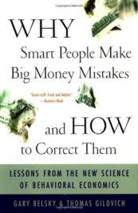

Why Smart People Make Big Money Mistakes and How to Correct Them
AZW3 · EPUB · PDF
|  | |
| Simon & Schuster | |
| 2009 | |
Protect and grow your finances with help from this definitive and practical guide to behavioral economics—revised and updated to reflect new economic realities.
In their fascinating investigation of the ways we handle money, Gary Belsky and Thomas Gilovich reveal the psychological forces—the patterns of thinking and decision making—behind seemingly irrational behavior. They explain why so many otherwise savvy people make foolish financial choices: why investors are too quick to sell winning stocks and too slow to sell losing shares, why home sellers leave money on the table and home buyers don’t get the biggest bang for their buck, why borrowers pay too much credit card interest and savers can’t sock away as much as they’d like, and why so many of us can’t control our spending. Focusing on the decisions we make every day, Belsky and Gilovich provide invaluable guidance for avoiding the financial faux pas that can cost thousands of dollars each year.
Filled with fresh insight; practical advice; and lively, illustrative anecdotes, this book gives you the tools you need to harness the powerful science of behavioral economics in any financial environment.
"A terrific introduction to the emerging science of behavioral finance." -- Money magazine
"Great stuff. Fresh and helpful." -- BusinessWeek
"This very helpful book is aimed at the novice and the expert, and you come away from it somewhat chastened by your own financial mistakes, but hopeful that you might learn a thing or two about holding onto your hard-earned cash. The authors don't offer simplistic solutions, but hard facts and sound advice."
--Robert J. Hughes, SmartMoney
Gary Belsky is editor in chief of ESPN The Magazine , where he has worked since 1998. The author of several books, he lectures frequently on the psychology of decision-making to business and consumer groups around the world. From 1994 through 1998, Belsky was a regular commentator on CNN’s Your Money and a frequent contributor to Good Morning America , CBS This Morning , Crossfire and Oprah ; he continues to appear on local and national radio and TV, commenting on sports, economics, business and personal finance. A St. Louis native, Belsky graduated from the University of Missouri in that city in 1983 with a BA in speech communication and political science. Before joining ESPN he was a writer at Money magazine and a reporter for Crain’s New York Busines s and the St. Louis Business Journal . In 1990, Belsky won the Gerald Loeb Award for Distinguished Business and Financial Journalism, administered by The Anderson School at UCLA. Belsky, who lives in Manhattan, serves on the board of directors of Urban Pathways, one of New York City’s largest providers of services to the homeless and mentally ill; as well as the New York Neo-Futurists, an East Village theater company.
Thomas Gilovich is a professor of psychology at Cornell University and author of The Wisest One in the Room (with Lee Ross) , How We Know What Isn’t So , Why Smart People Make Big Money Mistakes , and Social Psychology . He lives in Ithaca, New York.